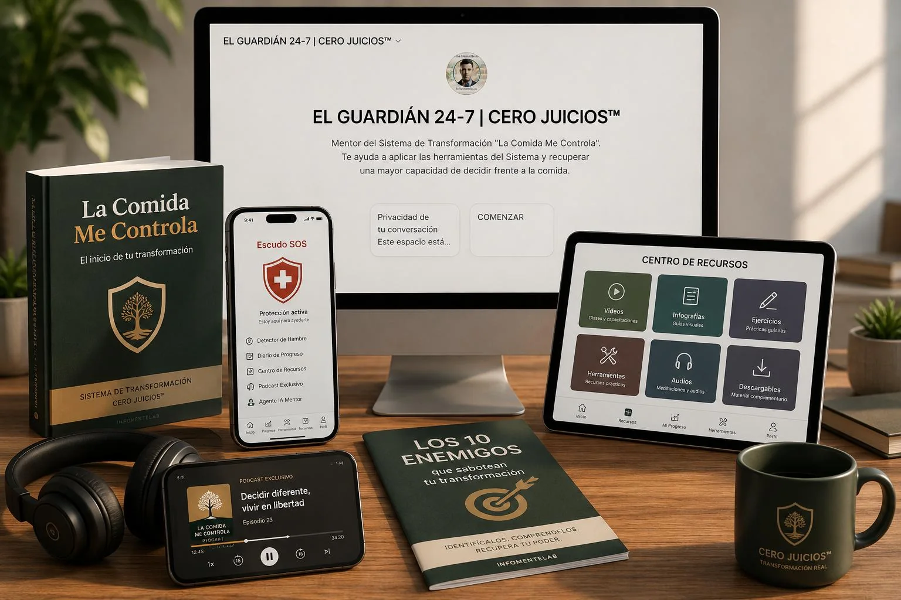
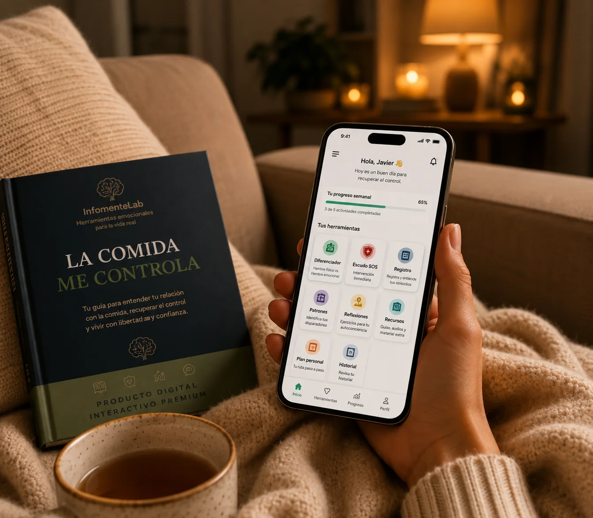
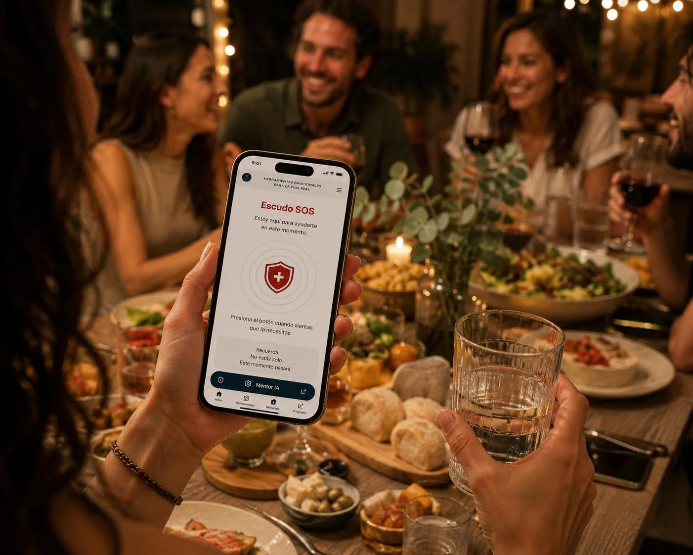
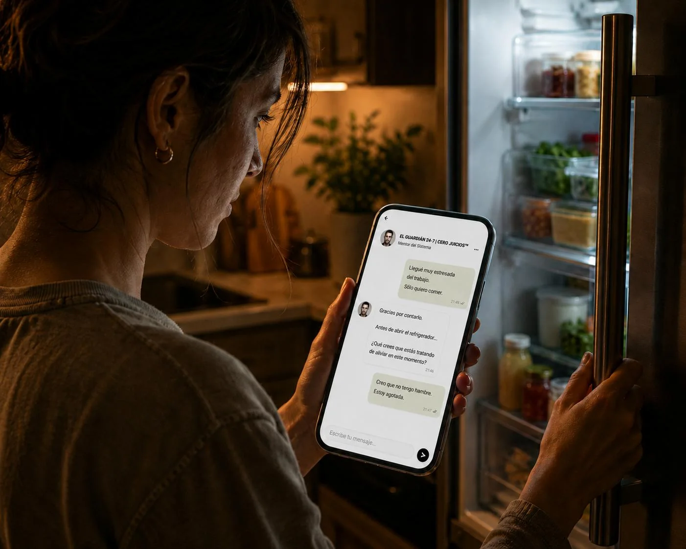

Aprende a interrumpir el impulso de comer antes de actuar
Nunca fue falta de voluntad, fue falta de herramientas... hasta hoy.
No es otra dieta ni otro PDF. Es un sistema digital con metodología, contenido de aprendizaje, App de intervención, Agente IA y audios de apoyo.

No es otro curso lleno de teoría.
"La Comida Me Controla" es una metodología práctica para comprender lo que ocurre en tu organismo, entrenar una respuesta diferente ante la ansiedad por comer y utilizar herramientas de intervención cuando el impulso aparece.
Comprende
Identifica patrones y detonantes sin depender de explicaciones confusas
Entrena
Practica nuevas respuestas en situaciones cotidianas
Actúa
Utiliza herramientas específicas cuando aparece el impulso
Apóyate
Accede al agente IA y a recursos de apoyo cuando sea necesario
QUIERO EMPEZAR CON EL SISTEMA
$ 37 USD
La transformación real no es cuestión de voluntad, es cuestión de estrategia.
Depender únicamente de la fuerza de voluntad normalmente te deja sin herramientas cuando aparece el impulso. "La Comida Me Controla" integra psicología avanzada con tecnología interactiva para ayudarte a reconocer el origen del problema y desactivar el impulso por comer en el momento exacto.

Del conocimiento a la acción.
Empiezas con información que te explica lo que sucede, eliges en la app del sistema una herramienta según la situación y registras lo aprendido para conocer tu avance y ajustar tu siguiente decisión.
Etapa 01
El Radar de Enemigos y El Diferenciador
Ayuda a reconocer posibles detonantes y diferenciar hambre física de señales emocionales; no diagnostica condiciones médicas
Etapa 02
El Escudo SOS
Ofrece un protocolo de emergencia para pausar y elegir una respuesta antes de actuar automáticamente ante el impulso por comer
Etapa 03
Post-Episodio y Progreso
Registra avances por etapas y permite convertir episodios de ingesta excesiva en aprendizajes. Sin culpas.

En una reunión social ¿cómo haces una pausa cuando aparecen impulsos por comer en exceso?
Mira cómo funciona el Escudo SOS en la App de La Comida Me Controla.
QUIERO TENER ESTAS HERRAMIENTAS A MI ALCANCE
$ 37 USD
Imagina tener una Inteligencia Artificial especializada en alimentación emocional disponible para ti las 24 horas del día.
"El Guardián 24-7 | Cero Juicios™" te ayuda a aplicar el sistema, resolver dudas y atravesar momentos difíciles con una conversación guiada. Es tu mentor personal. Siempre disponible y sin juicios.
No diagnostica ni sustituye a un profesional de la salud.

Conoce cómo te acompaña "El Guardián 24-7"
Para comprender mejor este problema, revisamos conversaciones públicas, comentarios, entrevistas, podcasts y fuentes relacionadas con la relación cotidiana con la comida. Encontramos voces y patrones que aparecieron una y otra vez.
"Me digo "sólo uno más" y termino comiendo más de lo que quería".
QUIERO DETENERME A TIEMPO
"A veces siento que comer se convierte para mí en una respuesta automática"
ME DOY CUENTA QUE ACTÚO EN AUTOMÁTICO
"Sé que me ayudaría mucho parar, pero en el momento me cuesta aplicarlo."
QUIERO PODER APLICARLO
"Me prometo empezar de otra manera, pero a veces regreso al mismo patrón."
QUIERO ROMPER LA REPETICIÓN
"Busco sentirme mejor y después no siempre me siento como esperaba."
QUIERO ENCONTRAR UNA FORMA DIFERENTE DE RESPONDER
"Llevo tiempo queriendo cambiar y continúo repitiendo el mismo patrón."
QUIERO VOLVER A ELEGIR
Nota: Son citas o paráfrasis representativas de cientos de fuentes públicas y materiales revisados durante la investigación; no son reseñas ni testimonios de compradores de La Comida Me Controla.
Tu Sistema completo para recuperar el control.
Comprende qué hay detrás del impulso por comer. Sistema de Aprendizaje
Actúa cuando aparece el impulso. App de intervención Escudo SOS, Detectores y Registro
Cuenta con orientación y apoyo cuando lo necesites. "El Guardián 24/7"
ACCESO DE POR VIDA A LA APP DEL ESCUDO SOS Y AL GUARDIÁN 24/7, SIN MENSUALIDAD, PARA ESTA OFERTA.
Si adquirieras cada herramienta por separado, pagarías:
$ 245 USD
RECUPERA EL CONTROL HOY POR
$ 37 USD PRECIO DE LANZAMIENTO
El objetivo es que tengas más claridad y más herramientas para responder cuando aparezca el impulso de comer o notes que estás a punto de actuar en automático.
La experiencia será distinta para cada persona.
Lanzamiento inaugural de La Comida Me Controla
Estamos comenzando con la base de compradores de nuestro sistema. Si decides formar parte de esta etapa, te invitamos a compartir voluntariamente tu experiencia para escucharte y construir testimonios reales basados en uso auténtico.
El precio de lanzamiento es de $37 USD e incluye el acceso de por vida a “El Guardián 24-7 | Cero Juicios™”, agente de Inteligencia Artificial, sin mensualidad ni costo adicional.
COMIENZA HOY. ROMPE EL CICLO
ACCEDE HOY POR
$ 37 USD
✅ Pago 100% Seguro: Procesado y encriptado por Hotmart.
🚀 Acceso Inmediato: Recibe en tu correo las instrucciones de acceso después de confirmarse el pago.
🛡️ Activación inmediata: Configura tu perfil y activa tu primer Escudo SOS hoy mismo.
El cobro final puede mostrarse en moneda local e incluir los impuestos aplicables según el país. El pago se procesa de forma segura mediante Hotmart.
Después de confirmarse el pago, recibirás al correo utilizado durante la compra las instrucciones para acceder al área de miembros y al contenido adquirido. Si necesitas ayuda, escribe a contacto@infomentelab.com.
Garantía de Compra
Tienes 7 días de garantía. Si deseas solicitar un reembolso dentro del plazo aplicable, puedes hacerlo desde el canal oficial de venta por Hotmart o escribir a contacto@infomentelab.com para recibir orientación. El trámite y los tiempos de acreditación se rigen por las condiciones de Hotmart y por el método de pago utilizado.
Preguntas Frecuentes
Al comprar recibirás acceso al sistema completo “La Comida Me Controla”:
• El Material de Aprendizaje para comprender tus patrones y el impulso por comer.
• La app del Escudo SOS, con herramientas de intervención para utilizar cuando aparece el impulso.
• Acceso al Agente IA "El Guardián 24-7 | Cero Juicios™, incluido sin mensualidad y con acceso de por vida para esta oferta.
• El bono Audios de Rescate SOS.
• Las instrucciones para comenzar y activar tus herramientas.
No recibirás un producto físico: todo el contenido y las herramientas se entregan de forma digital. Hotmart enviará los datos de acceso al correo utilizado durante la compra. Si necesitas ayuda, puedes escribirnos a contacto@infomentelab.com.
Es un sistema digital de aprendizaje y acción.
En resumen: el PDF o material de aprendizaje es solo una parte. Lo que recibes es un sistema completo que combina aprendizaje, práctica, herramientas de intervención y apoyo digital.
La app del Escudo SOS está diseñada como un sistema de acompañamiento cuando aparece el impulso de comer. Desde tu dispositivo accedes a herramientas breves que te ayudan a detenerte, observar qué está ocurriendo y elegir una respuesta diferente antes de actuar en "piloto automático".
Su funcionamiento se organiza en tres momentos:
1. Reconoce. Utiliza el Radar de Enemigos para identificar qué puede estar activando el impulso y observar si se relaciona con hambre física, emociones, hábitos o una situación concreta.
2. Interviene. Activa el Escudo SOS y sigue un protocolo guiado de intervención para crear una pausa y recuperar claridad en ese momento.
3. Aprende. Después puedes registrar lo que ocurrió mediante el Análisis Post-Episodio, para reconocer patrones y aprender de la experiencia sin quedarte únicamente con la culpa. También integra un Centro de Recursos donde puedes acceder a todos los materiales de aprendizaje del Sistema.
La app no funciona como una dieta, no diagnostica ninguna condición y no sustituye atención médica, psicológica o nutricional profesional. Es una herramienta práctica para aplicar el sistema en situaciones cotidianas.
No necesitas instalar ningún programa ni descargar un archivo. Después de la compra, se te enviará el acceso a un área de miembros y las instrucciones para utilizar las herramientas digitales del sistema desde un dispositivo con conexión a internet.
La app del Escudo SOS se puede abrir desde el enlace de acceso. Si lo deseas, puedes crear un acceso directo en la pantalla de inicio de tu celular para encontrarla más fácilmente, pero esto es opcional.
"El Guardián 24/7" también se utiliza desde su acceso digital correspondiente. No necesitas contratar otra aplicación ni pagar una mensualidad adicional.
El Agente IA “El Guardián 24-7 | Cero Juicios™” es un agente de Inteligencia Artificial diseñado para ofrecer apoyo digital durante el uso de “La Comida Me Controla”. Puedes conversar con él para aclarar dudas sobre el sistema, comprender mejor lo que estás experimentando en una situación cotidiana, reflexionar sobre tus patrones y recibir orientación para utilizar las herramientas disponibles.
El Guardián 24/7 sí puede:
• Explicarte cómo utilizar los recursos del sistema.
• Ayudarte a ordenar lo que ocurrió en un momento difícil.
• Hacerte preguntas de reflexión para observar patrones y detonantes.
• Sugerirte qué herramienta del sistema podría ser útil en ese momento.
• Acompañarte en la conversación con un tono respetuoso y sin juicios.
El Guardián 24/7 no puede:
• Diagnosticar trastornos, enfermedades o condiciones médicas.
• Sustituir a un médico, psicólogo, psiquiatra o nutriólogo.
• Prescribir medicamentos, dietas o tratamientos.
• Garantizar que el impulso desaparezca ni que todas las personas obtengan el mismo resultado.
• Atender emergencias médicas o psicológicas.
Si estás atravesando una emergencia o sientes que existe un riesgo inmediato para tu integridad, busca ayuda profesional o comunícate con los servicios de emergencia de tu localidad.
No. No existe una mensualidad ni un pago recurrente.
El acceso a La Comida Me Controla, a la app del Escudo SOS y al Guardián 24/7 está incluido mediante un pago único de $37 USD, con acceso de por vida para esta oferta.
No tendrás que contratar otra aplicación ni pagar una renta mensual para utilizar las herramientas incluidas.
Recibirás el acceso después de que se confirme tu pago. Los datos de acceso se enviarán al correo electrónico utilizado durante la compra y te permitirán entrar a un área de miembros donde encontrarás el contenido y las herramientas del sistema.
Si pagas con tarjeta u otro medio electrónico, la confirmación normalmente se realiza en pocos minutos. Si eliges un medio que requiere confirmación posterior, el acceso se enviará una vez que se confirme el pago.
Si no encuentras el correo, revisa las carpetas de spam, promociones o correo no deseado. También verifica que hayas utilizado correctamente tu dirección de correo. Si después de la confirmación sigues sin recibir el acceso, escribe a contacto@infomentelab.com.
Sí. La Comida Me Controla no es una dieta restrictiva ni una lista de alimentos prohibidos. El sistema está enfocado en ayudarte a comprender tus patrones de alimentación, reconocer qué ocurre cuando aparece el impulso y practicar respuestas diferentes en situaciones cotidianas.
La intención no es que elimines para siempre tus alimentos favoritos, sino que puedas relacionarte con la comida con mayor claridad y tomar decisiones más conscientes, sin depender únicamente de la prohibición o la fuerza de voluntad.
El sistema no sustituye un plan de alimentación personalizado. Si tienes una condición médica, alergias, restricciones indicadas por un profesional o necesidades nutricionales específicas, consulta con un médico o nutriólogo.
Tienes 7 días para solicitar la devolución íntegra de tu compra.
Después de realizar la compra, puedes explorar el contenido y las herramientas de La Comida Me Controla. Si dentro de los primeros 7 días consideras que el sistema no es adecuado para ti, puedes solicitar el reembolso siguiendo el proceso de Hotmart.
Para iniciar la solicitud, visita refund.hotmart.com, introduce el número de transacción y completa la verificación mediante el correo utilizado durante la compra. También puedes escribir a contacto@infomentelab.com si necesitas orientación sobre el proceso.
La solicitud y la devolución son gestionadas conforme a las reglas y los plazos de Hotmart. El tiempo de procesamiento puede variar según la revisión y el medio de pago; por eso no prometemos una devolución instantánea.
No. La Comida Me Controla no sustituye la atención médica, psicológica, psiquiátrica o nutricional profesional. Es un sistema digital de aprendizaje y apoyo que ofrece información, ejercicios y herramientas para ayudarte a observar tus patrones y practicar respuestas diferentes en situaciones cotidianas.
El Guardián 24/7 tampoco diagnostica, prescribe tratamientos ni reemplaza la evaluación de un profesional. Si tienes una condición médica o psicológica, sigues un tratamiento, tomas medicamentos o necesitas un plan nutricional personalizado, utiliza el sistema como complemento y consulta con el profesional correspondiente.
Si estás atravesando una emergencia médica o psicológica, busca atención inmediata a través de los servicios de emergencia de tu localidad.
Nuestro Manifiesto
Por qué existe este sistema
En InfomenteLab creamos apps, sistemas y productos digitales con propósito: convertir conocimiento útil en herramientas prácticas para la vida cotidiana. No desarrollamos tecnología por la tecnología misma; diseñamos experiencias claras, accesibles y accionables.
La Comida Me Controla nació de una observación sencilla: muchas personas saben qué les gustaría cambiar, pero en el momento de la decisión no siempre cuentan con una herramienta que les ayude a hacer una pausa. Por eso combinamos aprendizaje, práctica, herramientas de intervención y apoyo digital en un mismo sistema.
No creemos en soluciones basadas en la culpa, las prohibiciones o las promesas fáciles. Utilizamos tecnología e inteligencia artificial para organizar conocimiento y crear recursos útiles, sin sustituir el criterio ni la atención de los profesionales. Cada producto de InfomenteLab debe tener un propósito claro, ser fácil de utilizar y aportar valor real a quien lo incorpora a su vida.